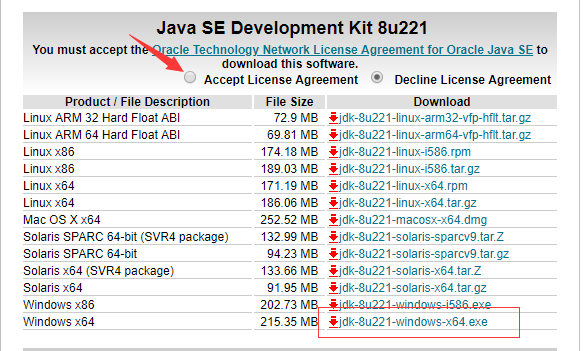
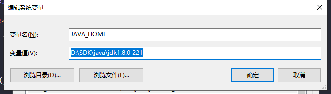
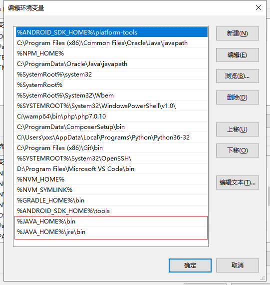
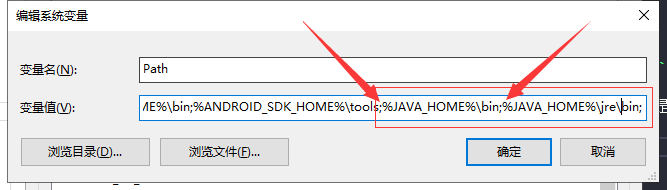
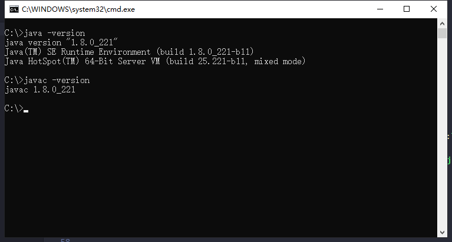

下载并安装 JDK (windows)
1. 下载安装java SE;
link -> http://www.Oracle.com/technetwork/Java/javase/downloads/index.html
注意：亲测安装最新版本的 java se（目前12.0.2）导致 cordova 运行失败。目前安装 Java SE 8u221 运行正常
ps：旧版本需要登陆才允许下载，按照流程注册登陆即可。
选择jdk版本

根据系统选择对应版本

2. 环境变量配置
自己选择路径安装完，注：不可以保存在中文路径下。
打开：我的电脑/计算机 —— 属性 —— 高级系统设置 —— 环境变量。
新建一个系统环境变量，变量名为
JAVA_HOME，变量值为JDK的安装目录路径(ex:D:\SDK\java\jdk1.8.0_221)。 在系统变量找到
Path变量-编辑，新建%JAVA_HOME%\bin和%JAVA_HOME%\jre\bin两个。ps: 若下面检测环境步骤失败，尝试将这两个值上移到首位（移到首位后可能会由可视化格式状态变为编辑文本状态）
可视化格式状态下新增。

编辑文本状态下新增（注意：用
;进行隔开）。
3. 检测jdk是否安装成功
打开cmd命令行分别运行
java -version,javac -version;

next -> Android SDK 下载与配置;